EditorialUI · Implementation
Six small visual building blocks: metadata tags, status badges, interactive filter chips, dividers, and progress feedback (linear + circular). Plain React + CSS — no new dependencies.
apostlerisk. Assumes Bundles 1–3 already merged; covers the dual Storybook category split and two optional follow-up swaps (EdComboBox tags, EdPasswordInput meter).
open ↗
Compact label for entity metadata — categories, regulations, business unit, model family. Five tones, optional close button (default "Remove {label}" aria-label). Sentence / kebab case, lower visual weight than EdStatusBadge.
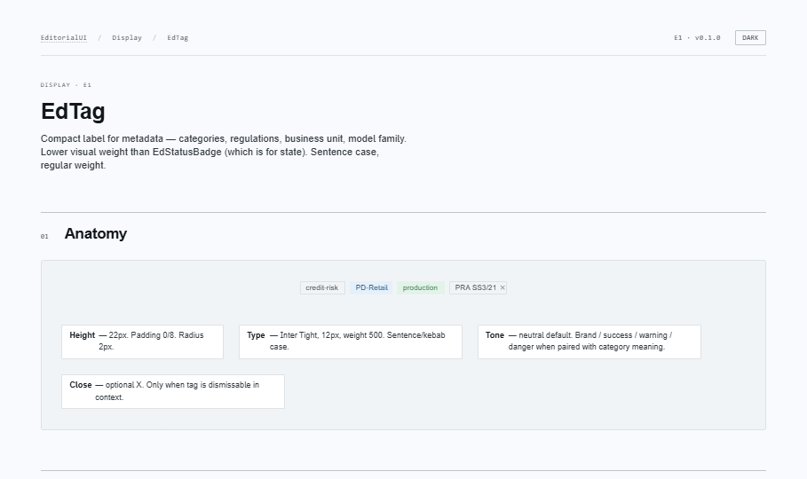
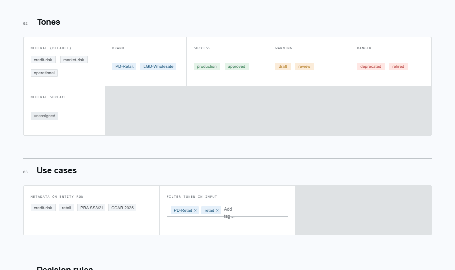
Compact label for status, severity, or lifecycle. Three styles × six tones. Mono uppercase for institutional feel. Optional 6px leading dot for states that imply motion. Non-interactive — never attach onClick.
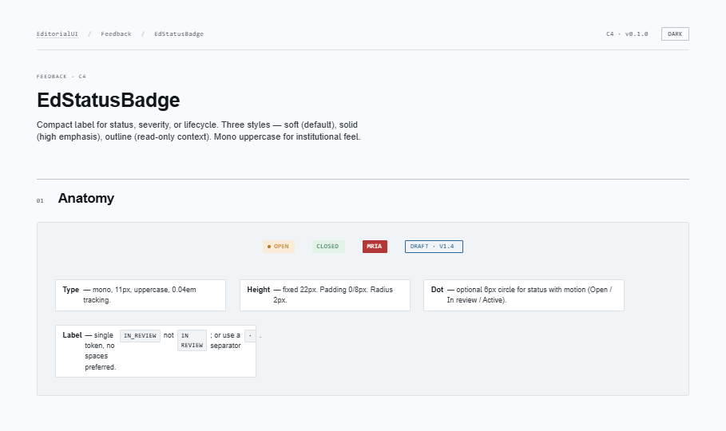
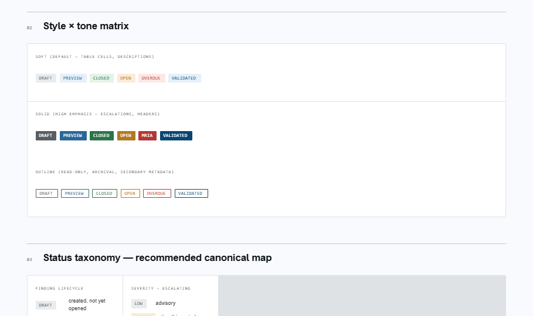
Pill-shaped interactive control. Three behaviour kinds: toggle (role=checkbox), radio (use inside role=radiogroup), input (removable token, Backspace removes). Optional count, dot, or leading icon. Count is woven into the accessible name automatically.
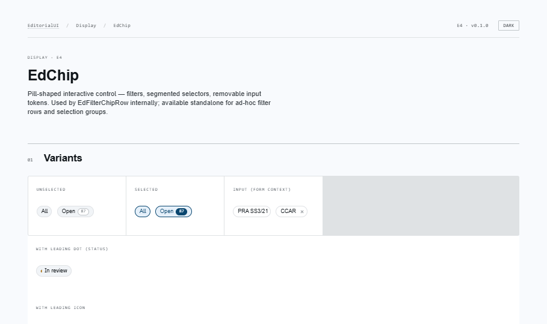
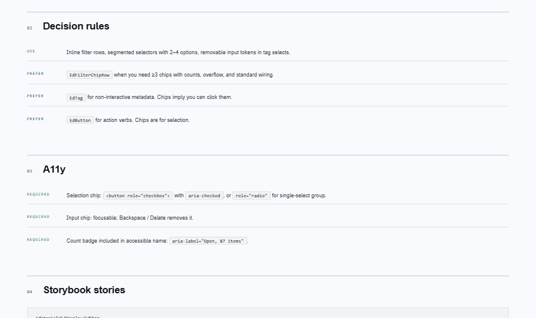
Hairline rule for separating sibling regions. Horizontal (renders <hr>), vertical, dashed, labeled. decorative switches to aria-hidden div — use for vertical separators in metadata strips. Prefer space and headings first.
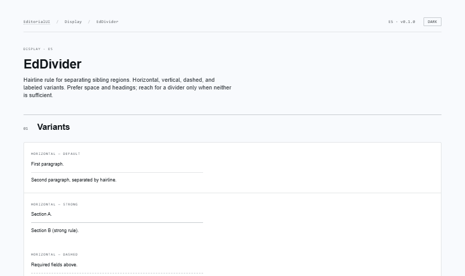
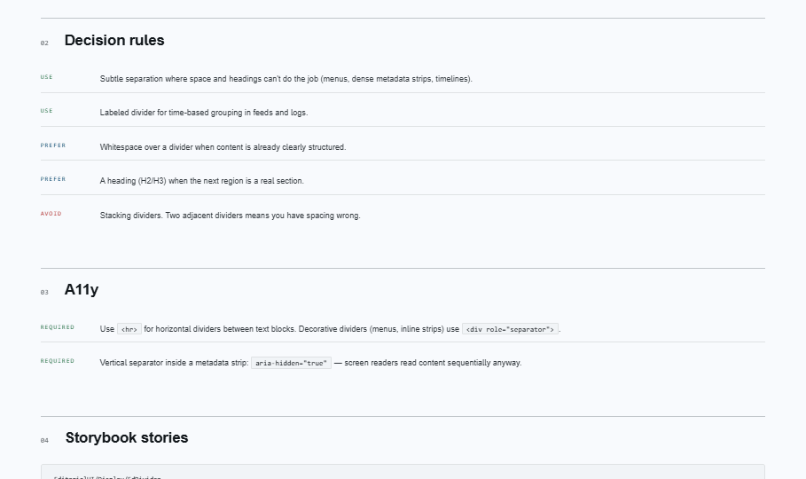
Linear progress bar. Determinate (pass percent) or indeterminate (omit). Five tones (brand / success / warning / danger / muted). EdProgressSegmented is the fixed-N variant for stage-based progress and password-strength bands. prefers-reduced-motion handled.
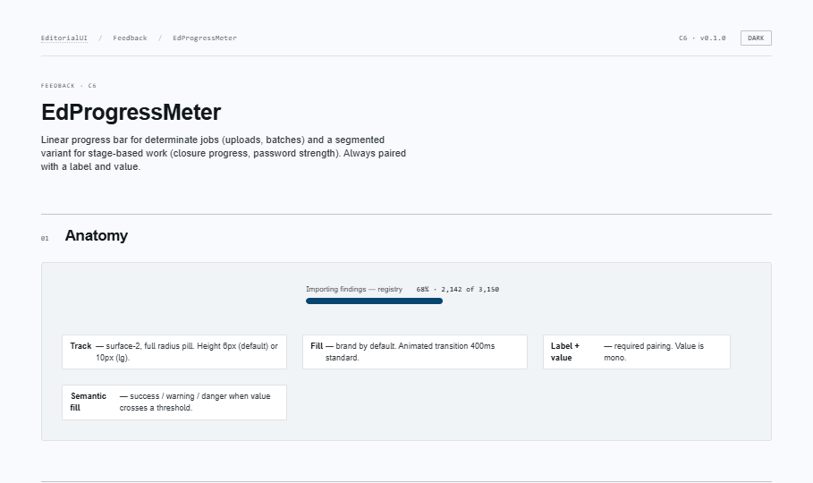
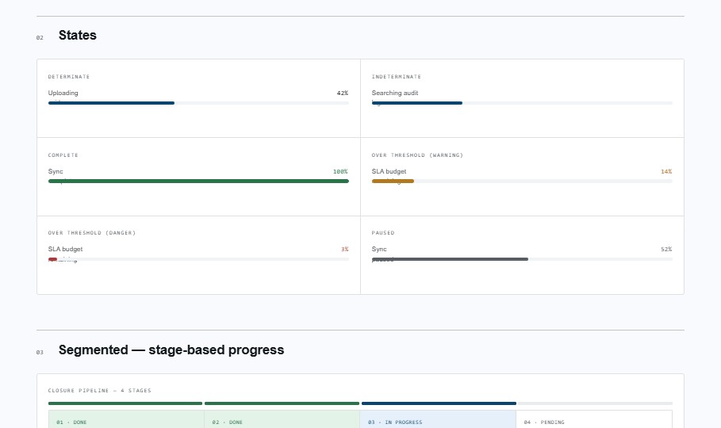
Spinner (indeterminate, role=status) + ring (determinate, role=progressbar) with optional centered value. Three sizes (sm 14 / md 20 / lg 32). Honors prefers-reduced-motion — rotation becomes a pulse.
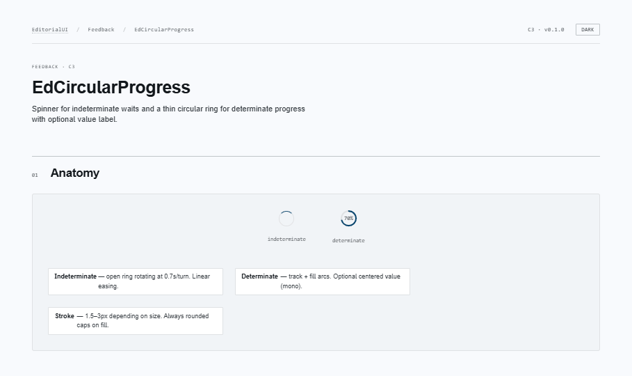
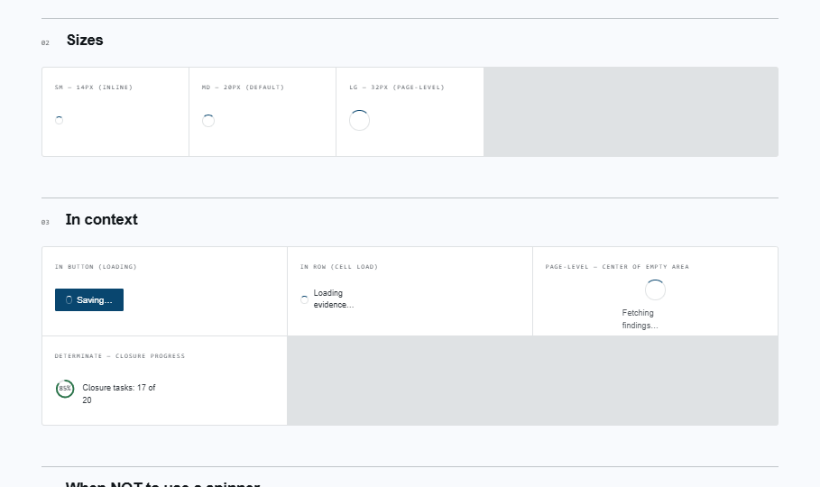
lucide-react is already on the project from Bundle 1.EdComboBox multi-mode tagsReplace the inline tag chips in the trigger with <EdTag tone="brand" onRemove={...}>. Search // TODO(bundle-4) in EdComboBox.tsx.EdPasswordInput strength meterDelegate to <EdProgressSegmented segments={4} filled={...} tone={...} valueText={...}>. Inherits reduced-motion handling for free.EdTag vs EdStatusBadgeTag is for what something IS (metadata). Badge is for state. Different shape, different role, never interchangeable.EdChip is interactiveThree behaviour modes (toggle / radio / input) — never decorative. For decorative use EdTag.EdProgressMeter / EdCircularProgress requires a visible label or an ariaLabel. A bare spinner with no accessible name is a regression.aria-valuetext is the spoken stringPass it when the visible value has context ("68%, 2,142 of 3,150"). Default for determinate is just "{N}%".prefers-reduced-motion is respectedIndeterminate sweeps fall back to static low-opacity bars; spinners fall back to opacity pulses. Pattern to follow in future motion components.EdNotification, EdDialog, EdEmptyState,
EdTooltip. These compose on top of the visual building blocks
in this bundle — notifications use EdStatusBadge tones and EdIcon; empty
states use EdButton + EdIcon; tooltips will surface as the labelled wrapper
for EdIconButton when its label isn't otherwise visible.